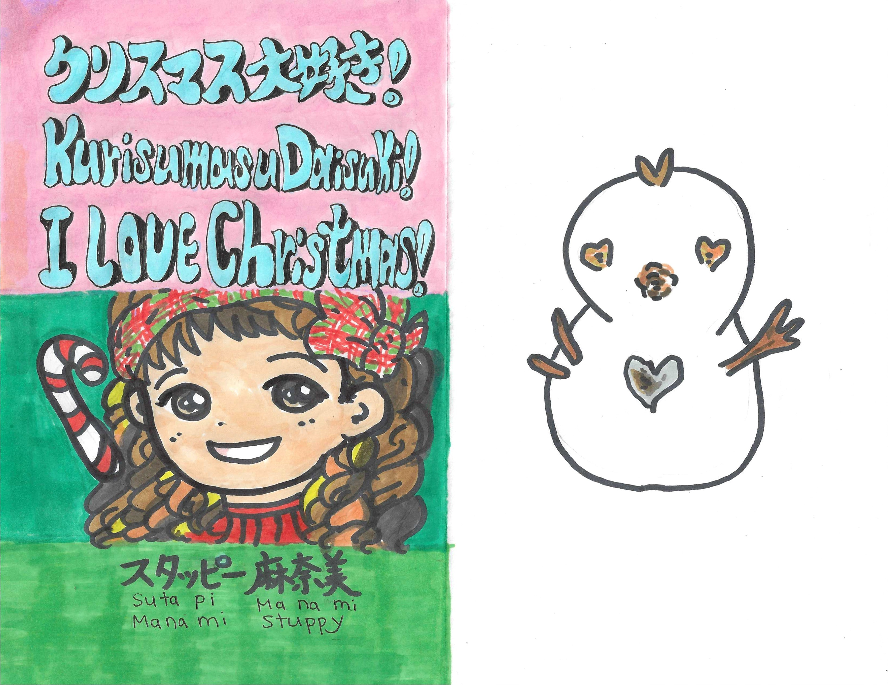
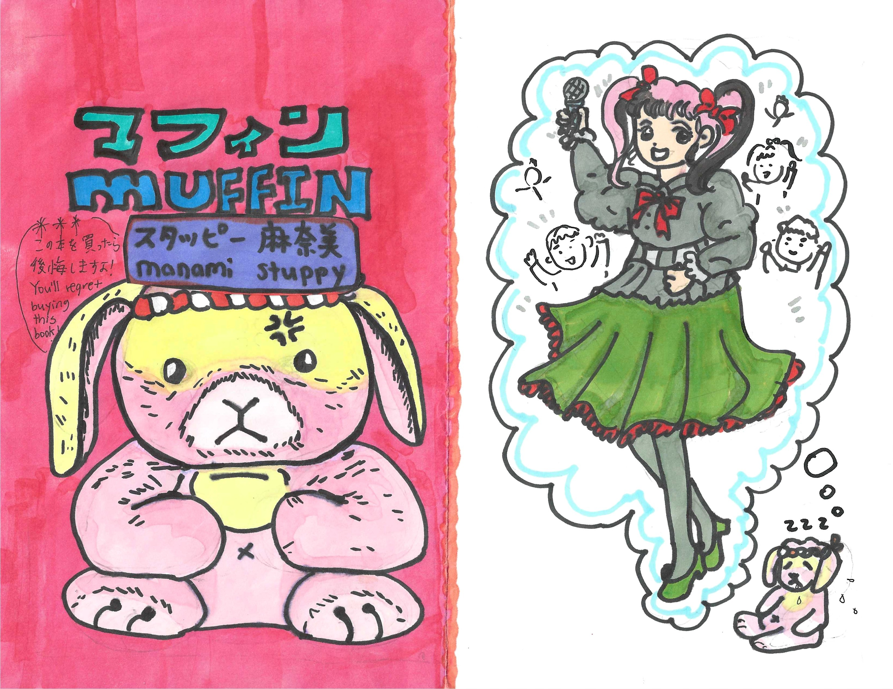

I LOVE Onigiri!
Japanese-English bilingual children’s book about onigiri, family, food, and visiting grandparents in Japan.
おにぎり、家族、日本の食文化、おじいちゃん・おばあちゃんとの時間をテーマにした日本語・英語バイリンガル絵本。
Japanese Bilingual Author ・ Chibi Artist ・ Manga-Inspired Illustrator
日本語バイリンガル作家・イラストレーター・漫画アーティスト
日本語・英語バイリンガルの本
These books are created for children, families, Japanese learners, and readers who love Japanese food, culture, dogs, holidays, manga, and cozy storytelling.
子ども、家族、日本語学習者、日本文化や食べ物、犬、季節の行事、漫画が好きな方に向けて制作しています。
Japanese-English bilingual children’s book about onigiri, family, food, and visiting grandparents in Japan.
おにぎり、家族、日本の食文化、おじいちゃん・おばあちゃんとの時間をテーマにした日本語・英語バイリンガル絵本。

A sweet Japanese-English bilingual book about rescuing a puppy and welcoming her into the family.
子犬を保護し、家族の一員として迎える心あたたまる日本語・英語バイリンガル絵本。

A cute bilingual Halloween book for families, children, and Japanese language learners.
家族みんなで楽しめる、かわいいハロウィンの日本語・英語バイリンガル絵本。

A warm Japanese-English Christmas story inspired by American and Japanese family traditions.
アメリカと日本の家族の雰囲気を取り入れた、あたたかいクリスマスのバイリンガル絵本。

A Japanese-style 4-koma manga comic with cozy humor, nostalgia, and a funny stuffed-animal personality.
昭和・平成の雰囲気とユーモアを感じる、日本の4コマ漫画スタイルのコミック。